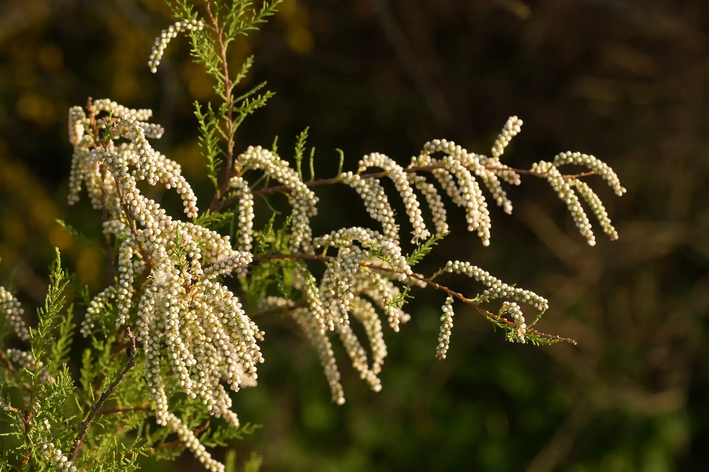

Ayuntamiento de Senés
JARDIN BOTANICO DE ESPECIES AUTOCTONAS DE SENES

Tamarix spp.

El taray (Tamarix spp.) es un arbusto o pequeño árbol caducifolio característico de zonas húmedas, salinas y cauces de agua del ámbito mediterráneo. Se distingue por su porte ligero y sus finas ramificaciones, que le confieren un aspecto delicado.
Puede alcanzar entre 2 y 6 metros de altura, con ramas delgadas y flexibles. Sus hojas son muy pequeñas, escamosas y de color verde grisáceo. Sus flores, agrupadas en densas espigas, presentan tonalidades rosadas o blanquecinas, creando un efecto ornamental muy llamativo.
El taray es típico de regiones mediterráneas, donde crece en ramblas, riberas, zonas inundables y suelos salinos. Es especialmente frecuente en áreas con presencia de agua estacional o con alta salinidad en el suelo.
En la Sierra de los Filabres y su entorno, aparece en cauces y ramblas, contribuyendo a la estabilidad del suelo y a la protección frente a la erosión en zonas expuestas.
El taray ha sido utilizado tradicionalmente por sus propiedades astringentes y antiinflamatorias. Sus extractos se han empleado en remedios populares relacionados con afecciones cutáneas y digestivas.
Además, posee un gran valor ecológico, ya que contribuye a la fijación del suelo y a la recuperación de zonas degradadas o salinizadas.
El taray simboliza la resistencia y la adaptación a condiciones difíciles, especialmente en ambientes salinos y con disponibilidad irregular de agua.
También representa la ligereza y la flexibilidad, reflejadas en su estructura y en el movimiento de sus ramas con el viento.
En Senés, el taray ha sido característico de ramblas y zonas húmedas temporales, donde desempeña un papel importante en la protección del suelo frente a la erosión.
En medicina se contaba que era antidiarreico, cicatrizante y astringente.
El taray florece principalmente en primavera y verano, produciendo espigas de pequeñas flores rosadas o blanquecinas que aportan un gran valor ornamental al paisaje.
El taray es una planta halófila, capaz de vivir en suelos con alta concentración de sal, lo que le permite colonizar ambientes donde pocas especies pueden desarrollarse.
Además, sus raíces contribuyen a estabilizar terrenos inestables, siendo una especie clave en la restauración de ecosistemas degradados.